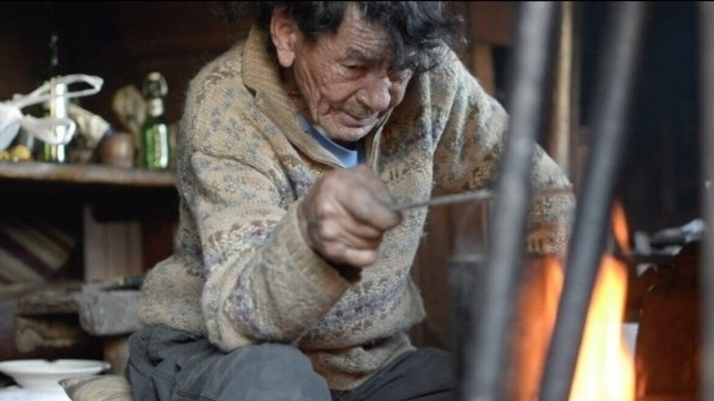

Se trata de "Nadie sabe que estoy aquí" y el documental "El otro".
Dos producciones chilenas se alzaron con importantes premios el pasado fin de semana. Una de ellas fue la película "Nadie sabe que estoy aquí" del director Gaspar Antillo, la cual obtuvo el premio a Mejor Director en Nuevas Narrativas en el Festival de Tribeca, en Nueva York.
>La cinta sigue la historia de Memo, a cargo de Jorge García, actor de origen chileno conocido por su papel de Hugo Reyes en "Lost". Acá da vida a una ex estrella de pop adolescente durante los 90 que luego de recluirse en una isla se convierte en un curioso ejemplar humano.
Producida por Fábula, será distribuida a nivel internacional por Netflix, por lo que se espera su llegada a la plataforma en fecha por determinar.
La otra producción ganadora de un importante premio fue el documental "El Otro", en específico el Burning Lights en el Festival Visions du Réel de Nyon (Suiza), uno de los más importantes sobre no ficción a nivel europeo. Acá el realizador Francisco Bermejo cuenta la vida de Oscar Garrido en algún lugar de la costra central chilena entre Algarrobo y Laguna Verde.
"Es algo similar a Wilson, la pelota que acompaña al protagonista de la película Náufrago. O al Gollum, si lo quieres, que habla con 'otro'. Son formas de combatir la soledad", señaló Bermejo en conversación con Culto.